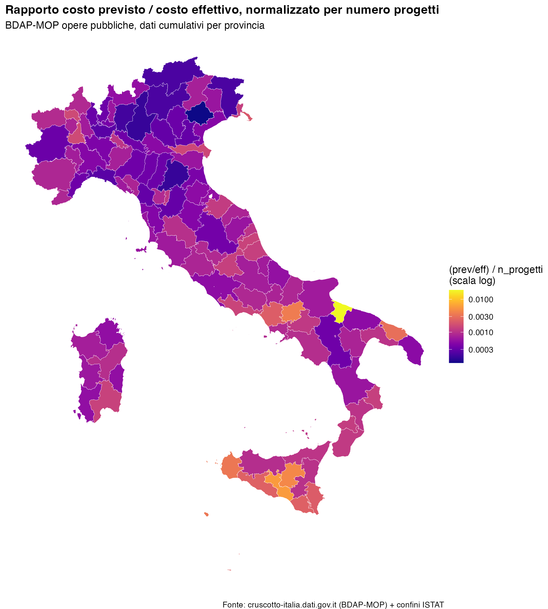

13 In-Class Exercise: Public Works Cost Overruns Across Italian Provinces
Using an AI agent connected to open government data (Cruscotto Italia)
13.1 What you will do
You will connect your AI coding assistant (Claude Code, Claude Desktop, or ChatGPT) to a live open-data server about Italian municipalities, pull a dataset on public works contracts, and produce a province-level map. The point of the exercise is not the map itself — it’s learning to (a) find and query a real administrative dataset through an AI agent, and (b) think critically about what the resulting variable actually measures before you interpret it.
Work in pairs. Bring a laptop with Claude Code (or Claude Desktop / ChatGPT) installed.
13.2 Step 1 — Set up the MCP connection
“Cruscotto Italia” (https://cruscotto-italia.dati.gov.it) aggregates ~27 open datasets (ANAC, BDAP, ISTAT, SIOPE, PNRR, …) for all 7,918 Italian municipalities. It exposes this data to AI assistants through the Model Context Protocol (MCP) — a standard that lets a chatbot call live data tools instead of guessing from its training data.
Go to https://cruscotto-italia.dati.gov.it/about.html#accesso-mcp and read the “5. Accesso” section. Note the four ways the data can be accessed — website, ZIP download, MCP API, CLI skill — and understand why we want the MCP API for this exercise (it lets the agent query the data directly from natural-language requests, without you writing any scraping code).
The public MCP endpoint is:
https://cruscotto-italia-mcp.agid.workers.dev/mcpFollow the step-by-step connection guide for your tool, linked from that same page (“Istruzioni per Claude” / “Istruzioni per ChatGPT”). If you are using Claude Code, this means adding the MCP server via its connector settings; if you are on Claude.ai or ChatGPT, add it as a custom connector using the URL above.
Confirm the connection works before moving on: ask your agent to look up any municipality and tell you something simple about it (population, number of schools — anything). If it returns a real, specific number, the connection is live.
13.3 Step 2 — Get a feel for the data
Before building the real query, practice with a different question so you understand what the tool can return and how to phrase requests. For example, try asking your agent something like:
“Using the Cruscotto Italia data, compare the number of electric vehicle charging points per 1,000 inhabitants between Bologna and Padova.”
Look at what comes back: does the agent tell you which underlying dataset it used? Does it cite a source and a reference date? Does it return a single snapshot number or a time series? This matters because the dataset we actually want (public works costs) has similar quirks, and you should know how to spot them.
13.4 Step 3 — Define the outcome variable
The dataset we want comes from BDAP-MOP (public works projects reported to the Ragioneria Generale dello Stato). Each project carries a planned cost (“costo previsto”) recorded at approval, and an actual cost (“costo effettivo”) recorded as money is spent/accounted for. Our outcome variable, for each Italian province, is:
\text{outcome}_p = \frac{1}{N_p}\left(\frac{\text{costo previsto}_p}{\text{costo effettivo}_p}\right)
i.e. the ratio of total planned to total actual cost of public works in the province, divided by the number of projects N_p in that province. Dividing by N_p turns a province-level sum into something closer to a per-project measure, so that provinces with many small projects aren’t automatically different from provinces with few large ones purely mechanically.
Think for a minute, before moving on, about what values of this ratio you would consider “normal”, and what a very high or very low value might mean.
13.5 Step 4 — Ask your agent to build the map
Now ask your AI agent to produce the data and the map. Structure your request in stages — don’t ask for everything in one giant prompt. Roughly, you want to tell your agent to:
- Find the right tool/dataset. Ask it to locate, via the MCP connection, public-works cost data (planned vs. actual cost) for Italian municipalities, and to aggregate it to the province level — summing planned cost, actual cost, and project count per province. (Push it to look for a single bulk/aggregated file rather than querying thousands of municipalities one by one — ask it to explain which approach it’s taking and why.)
- Ask clarifying questions yourself before accepting the data, specifically: what time period does this cover? Is it a snapshot of active projects, a historical cumulative total, or a single year? (You will need this for Step 5.)
- Define the outcome variable exactly as in Step 3, and have it save the resulting province-level table (province code, number of projects, total planned cost, total actual cost, the ratio) to a file you can inspect.
- Ask it to map the result on a shapefile of Italian provinces, using a sensible color scale. Explicitly ask it to check: does one province dominate the color scale and wash out the rest of the map? If so, ask it to fix that (for example with a log scale on the fill) and explain why the fix is appropriate here.
- Ask it to write the code it used (not just show you the picture) to a script file you can read, re-run, and hand in.
Save your final map and script in this folder.
Here is the map produced for this exercise, for reference — your version does not need to look identical, but should show the same idea:

13.6 Step 5 — Questions to answer (hand in with your map)
Answer these in a few sentences each, based on what your agent told you and your own judgment — not just what sounds plausible.
What is the time frame of these numbers? Is “costo previsto” vs. “costo effettivo” measured over the same reference period for every project, or could you be comparing decades-old projects in one province to year-old projects in another? Does “cumulative since the project database began” mean the same thing for a province with mostly finished projects as for one with mostly projects still underway?
Why might this outcome variable differ across provinces for reasons that have nothing to do with how well public money is managed? Think about at least three distinct explanations — e.g., composition of project types (a road resurfacing vs. a rail tunnel behave very differently), project status (a project still “ATTIVO” reports spending-to-date, not a final cost, so it is not comparable to a “CHIUSO” project), scale effects (one huge outlier project can dominate a small province’s total), and the possibility that some provinces simply do more or different kinds of public works.
How much can we read into this variable? If you saw that province X has a ratio twice as high as province Y, would you be comfortable concluding X is “worse” at cost control? What additional data or checks would you want before making that claim? What would a labor/urban economist want to control for before treating this as a measure of public-sector efficiency or corruption risk?
Be specific and refer back to what you actually observed in your own data pull, not to BDAP-MOP data in the abstract.